Segera hadir di iPhone
Aplikasi iPhone sedang ditinjau oleh Apple. Satu akun akan membawa progres Anda di kedua ponsel.
Berlatih dengan AI. Tirukan pembicara sungguhan. Berlatih dengan orang sungguhan. Bangun rasa percaya diri untuk percakapan nyata.
Unduh BE Mastery
Gratis di Android, segera hadir di iPhone · Masuk dengan Apple, Google, atau email · Progres Anda mengikuti ke ponsel lain · Panduan dalam 15 bahasa.
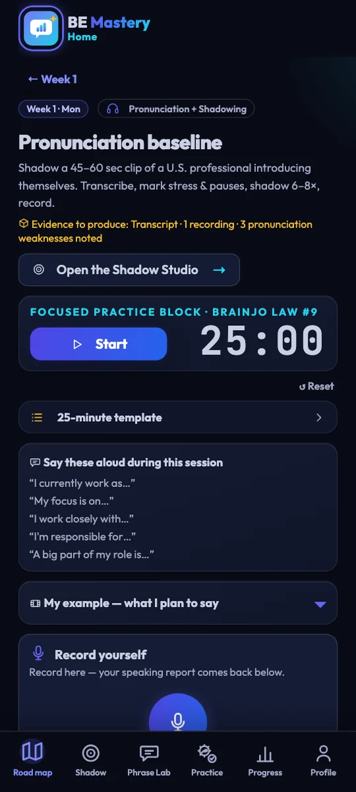

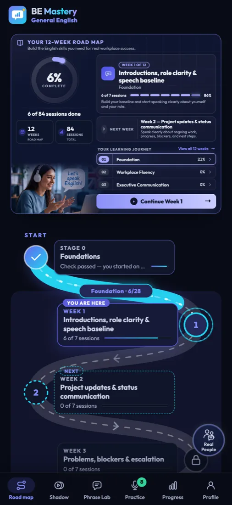
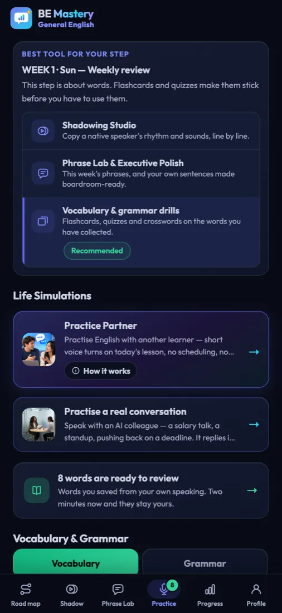
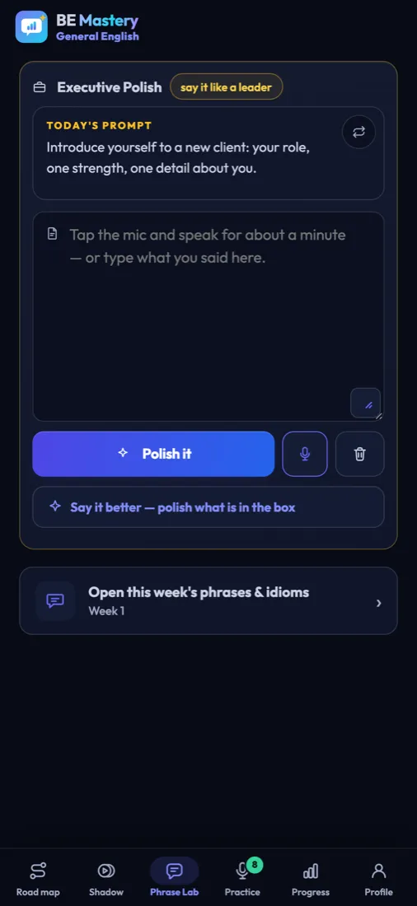
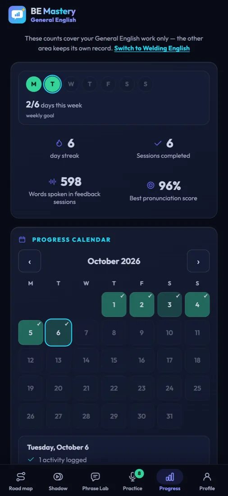
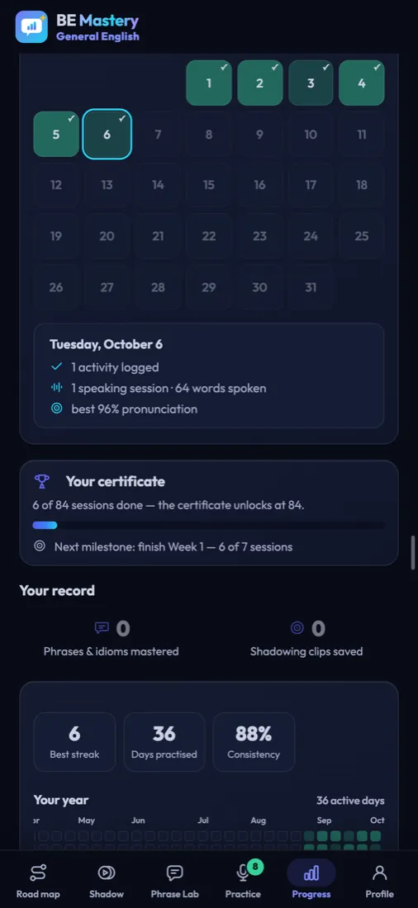
Tambahan terbaru di BE Mastery.
Aplikasi iPhone sedang ditinjau oleh Apple. Satu akun akan membawa progres Anda di kedua ponsel.
Satu ketukan untuk mencadangkan progres Anda dan membawanya antara iPhone dan Android.
Rangkaian hari Anda, langkah hari ini, dan Rekomendasi Anda, tanpa membuka aplikasi.
Setiap rekaman langsung diputar ulang saat Anda berhenti, dan Phrase Lab membacakan teks Anda dengan suara keras.
Sepuluh bidang kerja, simulasi tempat kerja, pelatih wawancara, dan kalimat bengkel sungguhan untuk ditirukan.
Lihat setiap kalimat Shadow dalam bahasa Anda dan dalam fonetik, kata demi kata.
Babak berwaktu dengan partner sungguhan, dan laporan pribadi untuk bagian Anda dalam panggilan.
Laporan bicara Anda, dibacakan oleh pelatih, lengkap dengan koreksi dan kata-kata yang lebih tepat.
Mengetahui bahasa Inggris tidak sama dengan berbicara dengan percaya diri.
Anda bisa membacanya dengan baik. Anda mengikuti rapat tanpa kesulitan. Lalu giliran Anda, dan kalimat yang sudah Anda siapkan datang sepersekian detik terlambat — jadi Anda malah mengucapkan versi yang lebih singkat dan sederhana.
Jarak itu bukan soal pengetahuan. Itu soal latihan. Jarak itu menutup dengan cara yang sama seperti bagi musisi dan atlet: sedikit, dengan suara keras, setiap hari.
Satu sesi terpandu sehari selama dua belas minggu, dalam empat langkah singkat. Anda tidak perlu memilih apa yang dipelajari. Peta jalan sudah tahu. Anda cukup datang dan berbicara.
Frasa hari ini, atau pembicara sungguhan, dan situasi tempat frasa itu digunakan.
Tirukan sampai ritmenya tidak lagi terasa asing.
Ucapkan dengan suara Anda sendiri. Inilah bagian yang menentukan.
Kesan yang Anda berikan, apa yang perlu diperbaiki, dan kalimat Anda yang disusun ulang.
Buka aplikasinya dan halaman Anda sudah menunggu: sesi hari ini lebih dulu, lalu latihan yang sesuai dengannya.

Latih percakapan sungguhan — wawancara kerja, rapat berdiri, negosiasi gaji — sebelum itu benar-benar terjadi.
Berbicara dengan pembelajar lain yang sedang berlatih sekarang, atau telepon mereka secara langsung.

Ucapkan dengan cara Anda, dengar versi ruang rapat direksi.
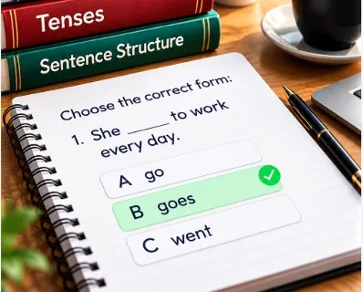
Latihan singkat dan interaktif untuk tata bahasa yang benar-benar Anda gunakan saat berbicara.
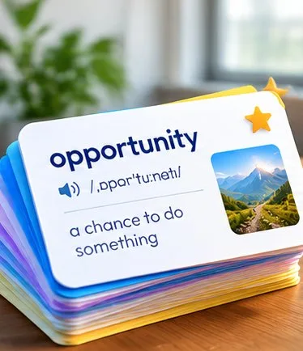
Kata yang membuat Anda tersendat akan terus muncul lagi sampai tidak lagi membuat Anda tersendat.
Dua belas minggu, satu hari pada satu waktu. Anda selalu tahu apa yang berikutnya.
Masih banyak lagi di dalam aplikasi selain yang kami tampilkan di sini. Buka di aplikasi
Pilih sebuah ceramah, wawancara, atau pelajaran sungguhan. Tonton sambil kata-katanya menyala satu per satu, tirukan satu paragraf pada satu waktu, lalu ucapkan tanpa melihat teksnya. Begitu Anda bisa, itu sudah menjadi milik Anda.
Shadow Studio ada di dalam aplikasi. Dapatkan app
So here is where we are. The design is finished, and testing starts on Monday.
The one risk is the supplier, and I will know more by Thursday.
Iwanttomakesurewearealignedbeforewecommittothedeadline.
Je veux m'assurer que nous sommes d'accord avant de nous engager sur l'échéance.
/aɪ wɑnt tə meɪk ʃʊr wi ɑr əˈlaɪnd bɪˈfɔr wi kəˈmɪt tə ðə ˈdɛdˌlaɪn/
Klip berputar pada paragraf ini. Ketuk sebuah kata untuk mendengarnya, menerjemahkannya, lalu rekam.
Cari berdasarkan topik, atau ambil pilihan untuk minggu ini dari rencana Anda. Tautan video apa pun juga bisa digunakan.
Lima babak, masing-masing dengan bantuan yang semakin berkurang, sampai kalimat itu menjadi milik Anda.
Setiap laporan tersimpan, lengkap dengan kata-kata yang membuat Anda tersendat, sehingga Anda bisa melanjutkan dari tempat terakhir.
Pustaka, Tonton, Shadow, dan Tantangan adalah bagian dari Bahasa Inggris umum. Terjemahan dan pelafalan ditulis oleh AI dan membutuhkan koneksi internet. Laporan di atas hanyalah contoh; laporan Anda dibuat dari rekaman Anda sendiri.
responsible for + -ing · since + titik awal waktu memerlukan have been + -ing
Bicara selama satu menit tentang proyek Anda, peran Anda, atau pembaruan yang Anda utang kepada seseorang. Laporan ini memberi tahu kesan yang Anda berikan, memperbaiki kesalahan Anda, menyusun ulang kalimat Anda, dan memberi Anda kata-kata yang lebih tepat. Lalu pelatih membacakannya untuk Anda.
Latih dengan suara keras, di ponsel Anda. Dapatkan app
Lihat siapa lagi yang sedang berlatih sekarang dan selesaikan tugas bicara hari ini bersama — dalam giliran suara singkat, atau lewat panggilan langsung.
Practice Partner adalah bagian dari Bahasa Inggris umum dan ditujukan untuk orang dewasa (18 tahun ke atas).
Practice Partner ada di dalam aplikasi. Dapatkan app
Pilih seseorang, atau dipilih
Bukan persentase kursus. Empat hal yang sama, diukur dari rekaman yang benar-benar Anda buat, babak demi babak — sehingga kemajuan Anda adalah sesuatu yang bisa Anda tunjukkan.
Ilustrasi bentuk laporan — angka Anda sendiri berasal dari rekaman Anda sendiri.

Selesaikan semua 84 sesi dan sertifikat ini akan terbuka dengan nama Anda tercantum. Unduh sebagai PDF atau bagikan.
Sertifikat ini menunjukkan Anda menyelesaikan program. Ini bukan tes level bahasa Inggris. Contoh yang ditampilkan.Berfungsi tanpa koneksi internet. Rekaman disimpan di perangkat Anda — kami tidak pernah menyimpan salinannya.

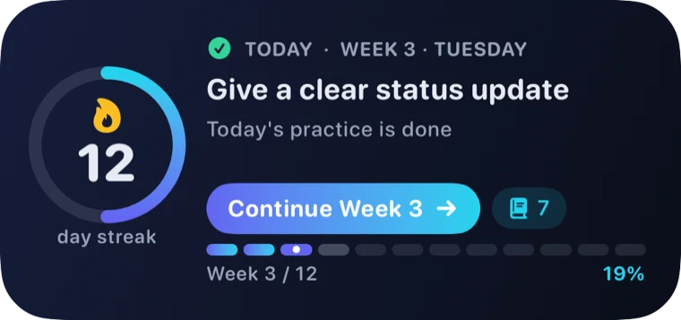
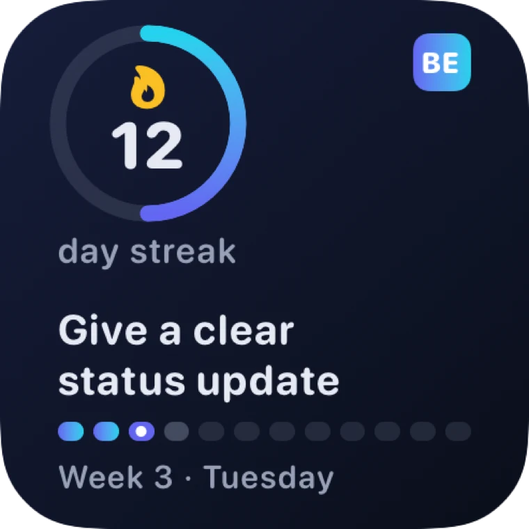

Widget untuk iPhone dan Android menampilkan rangkaian hari Anda, langkah hari ini, dan posisi Anda di peta jalan. Satu ketukan langsung membawa Anda ke pelajaran yang tepat.
Masuk untuk menggunakan widget. Widget yang lebih besar dan Rekomendasi adalah bagian dari Premium.
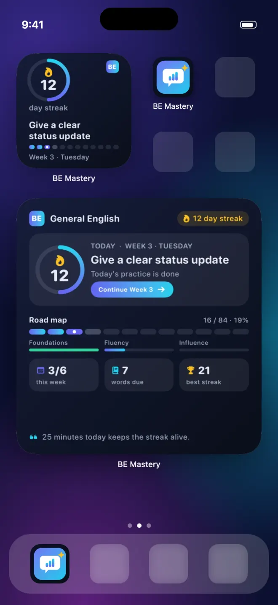


Anda mengikuti setiap kata, lalu membeku saat tiba giliran Anda. Latih pembaruan Anda sebelum menyampaikannya.
Jawab pertanyaan dengan suara keras, dengar kesan yang Anda berikan, dan perbaiki sebelum hari-H.
Menetap lebih cepat: obrolan ringan, penyerahan tugas, panggilan telepon, dan percakapan soal dokumen.
Tukang las mendapat programnya sendiri: bengkel, keselamatan, pemeriksaan kualitas, dan wawancara.
Pilih yang sesuai dengan dunia tempat Anda sebenarnya berada. Keduanya adalah program terpisah dengan kemajuan terpisah — beralih kapan saja Anda mau.
Sistem bicara yang lengkap, dari dasar sampai komunikasi tingkat eksekutif.
Practice Partner dan latihan dengan manusia hanya ada dalam program ini.
Program teknis yang dibangun berdasarkan percakapan yang sungguh-sungguh dialami seorang tukang las.
Dimulai dengan lima belas hari Dasar dalam bahasa Anda sendiri, jika Anda membutuhkannya.
Program tersendiri untuk bidang kerja terampil. Anda melatih kalimat yang sungguh-sungguh diucapkan oleh supervisor, inspektur, dan pewawancara — serta jawaban yang mereka harapkan.
Pilih Bahasa Inggris pengelasan saat Anda membuka aplikasi. Dapatkan app

“Check the root pass before you start the fill. Tell me if you see any porosity.”
Anda“Understood. I'll check the root pass and report any porosity before I start the fill.”
Bicarakan dulu sebelum shift — penyerahan tugas, izin kerja, penghentian keselamatan, hari pertama di bengkel baru.
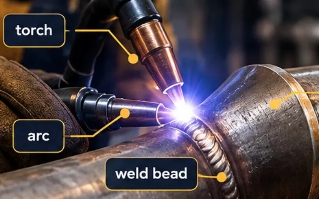
Torch, arc, root pass, weld bead: kata-kata bidang kerja Anda, didengar dan diucapkan dalam kalimat sungguhan.
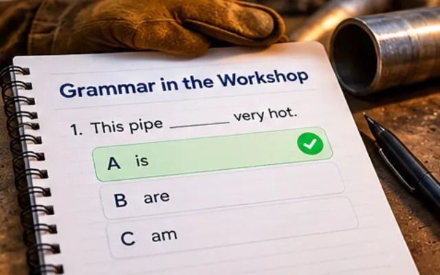
Latihan singkat yang dibangun dari kalimat bengkel — tata bahasa yang Anda butuhkan untuk melapor, bertanya, dan memastikan.
Setiap kata yang membuat Anda tersendat akan muncul lagi dengan pelafalan dan artinya sampai benar-benar melekat.
Dua belas tahap, dari hari pertama Anda di bengkel sampai wawancara perekrutan. Anda selalu tahu langkah berikutnya.
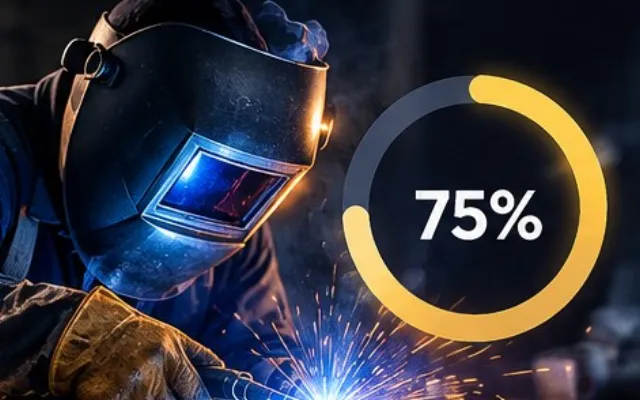
Lihat seberapa lengkap Anda menjelaskan pekerjaan Anda dalam bahasa Inggris, diukur terhadap standar bidang kerja Anda.

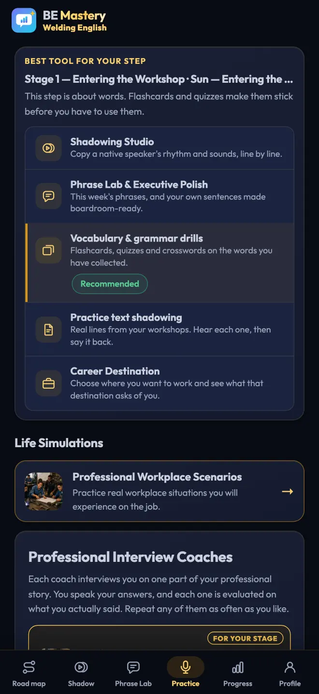


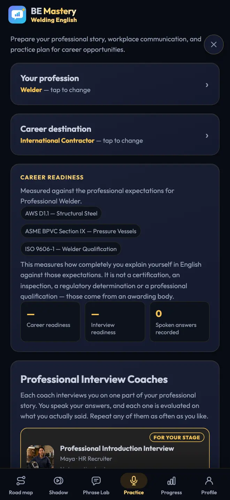

Program dua belas minggu, Shadow Studio, pelatih AI, Practice Partner, dan kemajuan Anda gratis hari ini. Tidak perlu kartu.
Seluruh program, di iPhone dan Android.
Satu langganan untuk kedua program, bagi pembelajar yang berlatih setiap hari. Belum dijual — begitu tersedia, harganya akan ditampilkan di sini dan di toko aplikasi.
Ya. Program lengkap dua belas minggu, Shadow Studio, pelatih AI, Practice Partner, dan kemajuan Anda gratis hari ini, tanpa perlu kartu. Paket Premium akan segera hadir; harganya akan ditampilkan sebelum ada tagihan apa pun.
Tidak. Anda bisa mulai langsung. Masuk dengan Apple, Google, atau email saat Anda ingin mencadangkan kemajuan Anda — kemudian kemajuan itu akan mengikuti Anda antara iPhone dan ponsel Android Anda.
Jika Anda bisa membaca bahasa Inggris tetapi membeku saat berbicara, Anda adalah pembelajar yang dituju oleh aplikasi ini. Tes singkat di awal akan menempatkan Anda, dan tahap Dasar yang lebih ringan tersedia jika Anda membutuhkannya.
Panduan, menu, dan bantuan tersedia dalam 15 bahasa, termasuk Prancis, Spanyol, Portugis, dan Arab. Latihannya sendiri dilakukan dalam bahasa Inggris.
Ya. BE Mastery sudah ada di Google Play sekarang, dan aplikasi iPhone sedang ditinjau oleh Apple. Masuk dengan akun yang sama di keduanya, dan kemajuan, kata-kata, serta laporan Anda akan ikut serta.
Rekaman Anda disimpan di perangkat Anda sendiri. Untuk menilai sebuah rekaman, rekaman itu dikirim secara aman ke penyedia AI kami dan tidak kami simpan. Panggilan langsung Practice Partner tidak pernah direkam.
Ditujukan untuk orang dewasa (18 tahun ke atas), hanya menampilkan nama depan, dan tidak ada foto atau profil. Anda bisa keluar, memblokir, atau melaporkan kapan saja.
Ya, untuk pengelasan dan bidang kerja terkait: tukang las, pipefitter, boilermaker, millwright, operator kilang, teknisi instrumentasi, teknisi listrik industri, petugas HSE, teknisi NDT, dan insinyur proses. Pilih Bahasa Inggris pengelasan saat Anda membuka aplikasi.
Tidak. Sertifikat ini menunjukkan Anda menyelesaikan program, dengan nama Anda tercantum. Ini bukan tes level.
Dua puluh lima menit di kereta, di tempat parkir, sebelum rapat. Aplikasi ini merekam, menilai, dan mengingat — dan seorang partner bisa saja sudah menunggu saat Anda membukanya.